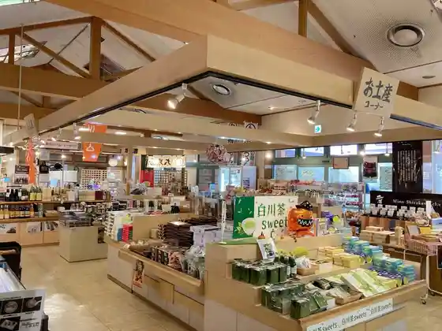
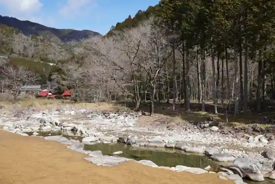
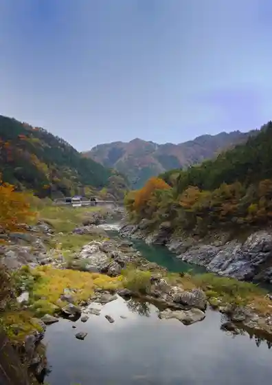

Roadside Station Mino Shirakawa
Shirakawa, Gifu · 0574-75-2146 · Official / source link

Roadside Station Seiryu Shirakawa Kuore Village
Shirakawa, Gifu · 0574-74-0050 · Official / source link

Mino Shirakawa Autodoa Resort Kuore Fureai Village
Shirakawa, Gifu · 0574-72-2462 · Official / source link
Hi Mizu Kyo (Shirakawa)
Shirakawa, Gifu · 0574-72-1311 · Official / source link

Oyama Hakusan Shrine no Osugi
Shirakawa, Gifu · 0574-72-1311 · Official / source link
Paipuorugan no Enso
Shirakawa, Gifu · 0574-72-2317 · Official / source link
Oyama Hakusan Shrine
Shirakawa, Gifu · 0574-72-1311 · Official / source link
Yoiichi (41) Mino Shirakawa
Shirakawa, Gifu · Official / source link
Sa Migawa Kyo no Autumn Leaves
Shirakawa, Gifu · 0574-72-1311 · Official / source link
Shirakawa Kyanpuhausu ®
Shirakawa, Gifu · Official / source link
Doboku Isan Shirakawa Hashi
Shirakawa, Gifu · 0574-72-1311 · Official / source link
Mino Shirakawa Furusato Taiken Village
Shirakawa, Gifu · 0574-76-2386 · Official / source link
Ni Tsu Moriyama
Shirakawa, Gifu · 0574-72-1311 · Official / source link
Mino Shirakawa Chacha Sono
Shirakawa, Gifu · 0574-72-1311 · Official / source link
Mino Shirakawa Chacha Sono (Fukei)
Shirakawa, Gifu · 0574-72-1311 · Official / source link
Shirakawa Machi no Hana Iwa Tsutsuji
Shirakawa, Gifu · 0574-72-1311 · Official / source link
Kaki Han no no Village Fukei
Shirakawa, Gifu · 0574-72-1311 · Official / source link
Ono Tsushima Shrine no Ten'o Sakura
Shirakawa, Gifu · 0574-72-1311 · Official / source link